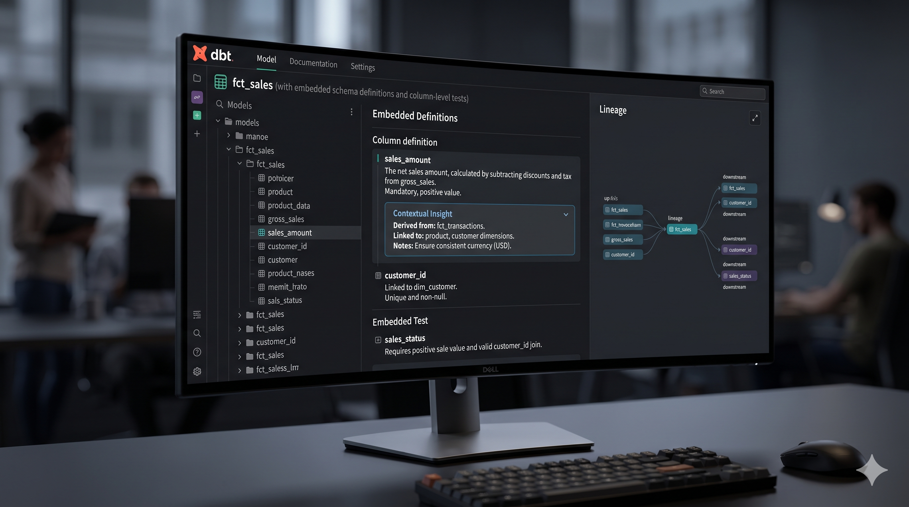

Every conference talk about AI in analytics ends the same way: a demo of SQL generation. Prompt in, query out, gasps from the audience.
It's fine. But it's not where I've saved the most time.
After eighteen months of putting AI into my analytics engineering workflow, the tasks that actually moved the needle have nothing to do with writing SQL. The highest-ROI uses are all in the parts of the job that aren't code — the translation layer between business questions and data models, the explanations nobody has time to write, the gaps that only become visible when you step back from the query editor.
Here are six.
1. Writing the first draft of a data incident postmortem
You wake up to a Slack message: "Revenue is down 40% in the dashboard." By the time you've dug through the lineage, checked the git log, and confirmed it's a pipeline failure in the currency conversion step — not an actual revenue drop — you're out of time and out of mental energy to write an explanation for the VP of Finance.
This is the job I now hand to AI immediately.
Think of it like having a translator in the room. You understand what happened technically; AI translates that into language the stakeholder can actually use.
The prompt structure that works:
You are a data engineer writing an incident summary for a non-technical stakeholder.
Context:
- Metric affected: [metric name and percentage change]
- Root cause: [technical description in one paragraph]
- Models involved: [list from dbt lineage]
- Recent changes: [paste relevant git log entries]
- Resolution: [what you did or plan to do]
Write a plain-English explanation (3-4 paragraphs) that:
1. States what the stakeholder saw and why it looked alarming
2. Explains the root cause without jargon
3. Describes the fix and when to expect clean data
4. Closes with what prevents recurrence
The output needs editing — it's always a bit corporate in tone — but it takes five minutes instead of forty. The AI's job here isn't intelligence, it's translation.
Paste the actual dbt run error and the relevant model SQL into the prompt. The more specific the input, the less you'll need to edit the output.
2. Turning "we need customer health" into a metric specification
The most expensive moment in analytics work isn't writing the model — it's writing the wrong model. This happens when a vague stakeholder request gets encoded directly into a dbt project without anyone pressure-testing what they actually meant.
"We need a customer health score" can mean seventeen different things. I now run every ambiguous business request through an AI-assisted translation step before opening my text editor.
This is like having an experienced BA on call: someone who asks the dumb questions before the project is already half-built.
The prompt:
A stakeholder asked: "[exact quote of what they said]"
I'm an analytics engineer. Before writing any SQL, translate this into a structured metric specification.
Generate:
1. Three different interpretations of what they might mean, each with a concrete example
2. The upstream data sources each interpretation would require
3. The business questions each interpretation can and cannot answer
4. The three clarifying questions I should ask before building anything
What you get back isn't a model — it's a structured conversation starter. I've caught three cases in the last six months where this step revealed that the stakeholder and their manager had completely different definitions of the metric, before I'd written a single line of SQL.
3. Finding the gaps in your data model
Here's a trick I use before any major project handoff: describe your existing dimensional model to an LLM and ask what it can't answer.
It's the same function as a good code reviewer who asks "what about this edge case?" — except applied to your data model design, and available at 11pm when your actual colleagues are not.
Here is the data model for our revenue analytics area:
Fact tables: [list with grain]
Dimension tables: [list with key attributes]
Our stakeholders care about: [list of teams and their typical questions]
What business questions cannot be answered with this model?
List at least ten, ordered by how likely a stakeholder is to ask them.
The output is reliably humbling. It catches gaps you're too close to see — things like "you can't track customer lifetime value because you have no concept of customer identity across products" or "you can answer churn rate for current customers but not for churned customers who reactivated."
This isn't AI doing data modeling. It's AI doing the "step back and be the skeptical outsider" role that's genuinely hard to do yourself when you've been staring at the same schema for six months.
The LLM will sometimes hallucinate gaps that don't actually exist, especially if your model description is incomplete. Use its output as a checklist to verify, not a verdict to trust.
4. Generating edge-case seed data
dbt seeds are great for unit-testing model logic. The problem is that test data you write manually tends to test the happy path. You add a null, maybe a duplicate, then you stop.
AI generates the edge cases you wouldn't think of — the same way a QA engineer who has seen production break thinks differently from the developer who wrote the code.
The prompt:
I'm testing a dbt model that calculates monthly recurring revenue. The logic:
- Sums active subscriptions by month, grouped by plan_type
- Handles plan upgrades mid-month by pro-rating the amount
Generate a CSV seed file with 20 rows that thoroughly tests this logic. Include:
- Happy path rows
- Subscriptions that start and end within the same month
- Upgrades that happen on the 1st, 15th, and last day of the month
- A subscription with a NULL end_date
- A subscription where plan_type changes on the same day as a billing event
- Rows with amounts of $0 and amounts over $100,000
- A subscription spanning a leap year February
The output is a CSV you can drop into seeds/:
subscription_id,customer_id,plan_type,start_date,end_date,monthly_amount
1,100,starter,2026-01-01,2026-01-31,49.00
2,101,pro,2026-01-15,2026-01-15,299.00
3,102,starter,2026-01-01,,49.00
4,103,enterprise,2026-02-28,2026-02-29,999.00
5,104,starter,2026-01-01,2026-01-15,49.00
Validate the pro-rating math yourself — AI gets boundary arithmetic wrong often enough to verify — but you go from "three rows I made up" to "twenty rows covering real edge cases" in two minutes.

5. Writing schema.yml descriptions that are actually useful
Every dbt project has the same problem: the models have descriptions, and they all say "this model contains order data." Nobody wrote real descriptions because writing twenty-word descriptions for every column in forty models is tedious beyond reason.
AI is good at this, but only if you give it enough context. The mistake is pasting column names and asking for definitions. The trick is pasting the SQL — and asking for descriptions derived from the actual logic.
Think of it like asking someone to explain what the model does, not just what it is called.
Here is a dbt model called fct_monthly_recurring_revenue:
[paste full model SQL]
Upstream models:
- stg_subscriptions: one row per active subscription period
- dim_customers: customer metadata including plan tier and signup date
- dim_dates: date spine
Write a schema.yml block for this model. For each column:
1. Infer what it contains from the SQL logic, not just the name
2. Write a description explaining the business meaning, not the technical derivation
3. Flag columns where the definition is ambiguous or where you'd add a data test
The output gives you descriptions like "Monthly recurring revenue contribution from this subscription, pro-rated for partial months at plan start or end" instead of "The MRR amount." That's the difference between documentation that helps and documentation that exists.
This works best on intermediate and mart models where the logic is complex enough that column names don't tell the full story. On staging models with simple renaming, the names usually are the documentation.
6. Plain-English impact analysis before a breaking change
Before you change the grain of a fact table or rename a key column, you want to know what breaks downstream. dbt ls --select <model>+ gives you a list of model names. Understanding what each downstream model does with your column is a different question.
This is the difference between a search result and an explanation. AI can turn the first into the second.
# Get the downstream lineage
dbt ls --select fct_orders+ --output path > /tmp/downstream.txt
Then feed it to an LLM along with the proposed change:
Here is a list of models downstream of fct_orders:
[paste output]
I'm planning to change the grain of fct_orders from one row per order to
one row per order line item.
For each downstream model:
1. Explain in one sentence what it likely does with fct_orders based on its name
2. Identify whether a grain change would likely break it
3. Suggest what I'd need to verify in that model
The AI doesn't have the actual SQL of those models, so this is inference from naming conventions — not analysis of real logic. But it turns "I don't know where to start" into "here are the eight models I need to verify" in a minute, which is a useful starting point before you do the actual verification.
What ties these six uses together: AI's job in each case is translation, not generation. Translating a business request into a structured spec. Translating a technical incident into a stakeholder message. Translating a lineage list into a plain-English impact checklist.
Code generation demos well. These tasks don't. They also don't tend to appear in "AI for data" blog posts. But they're where the time actually goes in analytics work — and where AI is, in my experience, most reliably useful without requiring careful validation of every line it produces.
What's the most time-consuming non-coding task in your analytics work right now?
Takeaways
- AI's translation jobs outperform its generation jobs — converting between technical and business-readable formats is where it saves the most time with the least risk.
- Postmortem drafts are the easiest win — give AI the root cause, affected models, and resolution; spend five minutes editing instead of forty minutes writing from scratch.
- Metric spec translation catches design errors early — surfacing multiple interpretations of a stakeholder request before writing any SQL is the cheapest time to find a misalignment.
- Gap analysis is hard to do yourself — describing your model to an LLM and asking what it can't answer surfaces blindspots that are invisible from inside the project.
- Edge-case seeds beat manual test data — AI consistently generates the boundary conditions (same-day plan changes, leap year dates, zero-value records) that manual seed files skip.
- schema.yml quality depends on prompt depth — paste the full SQL and upstream context, not just column names; the difference in output quality is not small.
- Impact analysis is checklist generation, not verification — use AI to build the list of models to inspect; do the actual inspection yourself by reading the SQL.